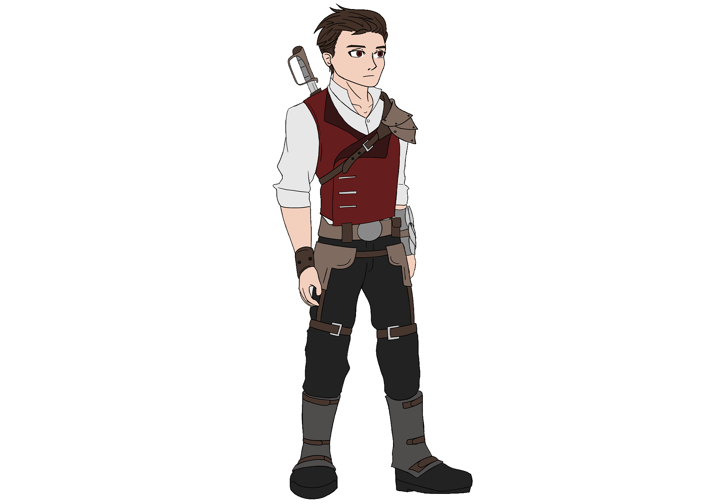

Project Fire, as I mentioned on the thumbnail, started out from an
idea I had for a Dungeons and Dragons character backstory. Tearyn Grimwald was a prince
who had run away from home in order to find an escape from his boring life as a prince.
Only to find that the world was a lot more dangerous than what he would read in his books.
Featured is the original drawing I did of our groups characters and the
jumping off point of what is to become Prince Tearyn and the first character of Project
Fire.
The original sketch of Prince Tearyn is the second one from the left.
At the time, he was an archer and hunter who resorted to the life of an assasin to make
ends meet.
As time went on and I had more time to really think about who Prince
Tearyn was, I figured that since he's a prince that he should have King and Queen as
parents. However, even in those early stages, Prince Tearyn only had his mother. Queen
Liarie Grimwald. So, with that being said, Prince Tearyn never did have a father
throughout the time I spent with him.
As time went on, eventually Tearyn Grimwald and Liarie Grimwald were
renamed to Tearyn Fireheart and Liarie Fireheart respectively due to the ever developing
story that I was forumulating.
The featured image is their in-universe royal portrait. I took the
the style of illustration from the presedential portraits that are featured in the
Whitehouse along with inspiration from Baroque style portraits.

The Knight
As the story slowly became more realized, the focus turned away from
Prince Tearyn and on to a new character. The Knight. This was the turning point in this
story where it shifted from being a story for an obscure Dungeons & Dragons character
to a story for a fully realized game.
Featured is the original sprite that was created for the Knight before
he was fully realized and before a female variant was made as well. This sprite was used
ingame as a testing element for some game mechanics that I had been working on.
As the story developed, the characters eventually developed a style in
terms of clothing, culture, and even a way of speaking. All of which is currently being
worked on in the Unity game creation engine. To see a preview of the ingame build, scroll
to the bottom.